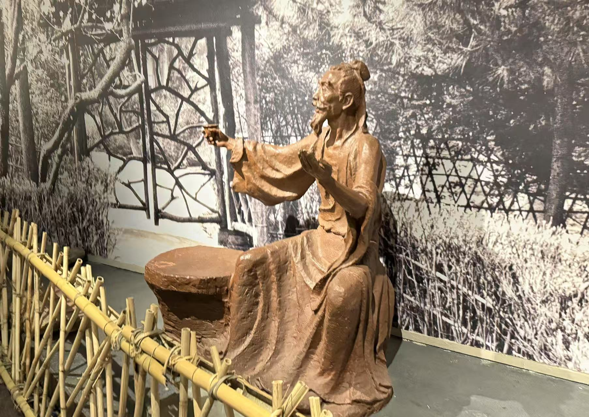
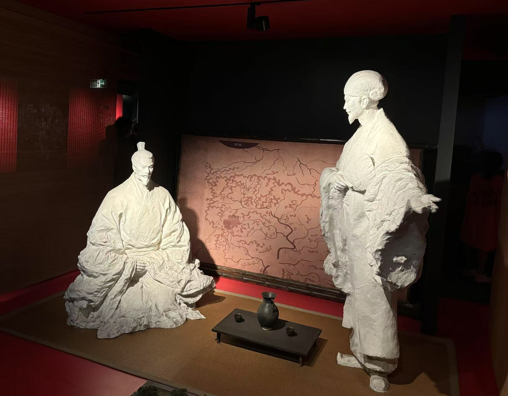
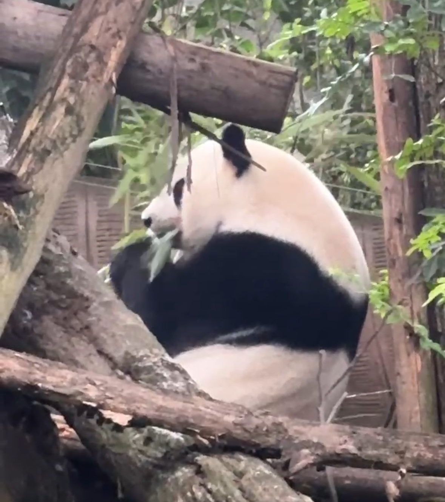

My Time at Sichuan!
-
Du Fu Thatched Cottage (杜甫草堂)
Du Fu Thatched Cottage is a memorial site dedicated to the famous Tang dynasty poet Du Fu. It preserves the environment where he once lived and wrote, offering visitors a quiet, scenic space to learn about his life and literary works.
-
WuHou Shrine (武侯祠)
WuHou Shrine is a historic temple in Chengdu built to honor Zhuge Liang, the brilliant strategist of the Three Kingdoms period. The site includes traditional architecture, ancient trees, and cultural relics that reflect his lasting legacy.
-
San Su Ci (三苏祠)

San Su Ci is a cultural site in Meishan commemorating the Su family—Su Xun and his sons Su Shi and Su Zhe—three important literary figures of the Song dynasty. The temple complex features exhibitions on their writings and influence.
-
Chengdu Research Base of Giant Panda Breeding (成都大熊猫繁育研究基地)
This panda research base is a conservation and education center focused on the protection of giant pandas. Visitors can observe pandas up close and learn about efforts to support their breeding and natural habitat. But there are a lot of people there.